1. Go to ClimBuntu OS download page.

2. Click on the Download ClimBuntuV0.1 button.
3. You will be forwarded to a Google Form for registration.
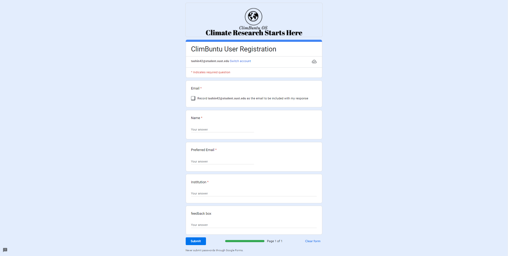4. Enter your credentials and submit.

5. Successful submission will provide a Google Drive link containing the ClimBuntu.iso file. Download the file on your device.
Before start the process of creating Bootable USB, you need to know the Partition Table Scheme of your Storage or Hard Dirve. That will be either GPT or MBR. To find this in Windows OS, search cmd in your windows search bar and Run as administrator.
After opening cmd, type diskpart and then list disk as shown in the following image. You will get to know about the 'Partition Table Scheme' with star(*) mark. As in the image, my both drive are in GPT format.
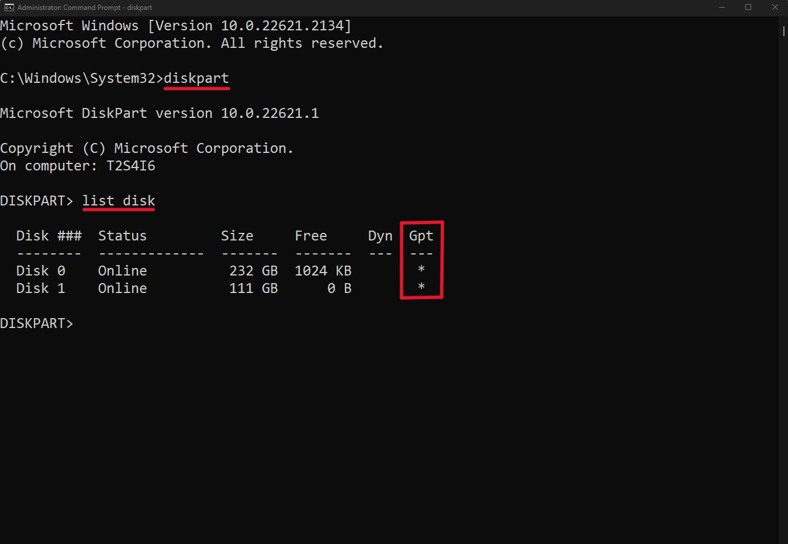1. For Windows users, there are many applications to create a bootable USB. I used 'Rufus.exe' for this.
2. You can download it from here.
3. After downloading it, double-click on 'rufus.exe to open. It will show a window like the one below.
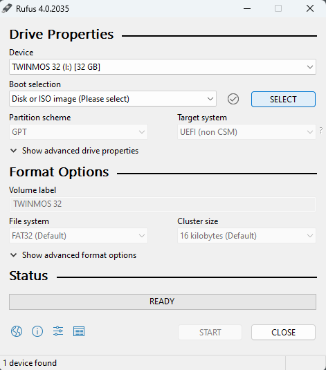4. From the ‘Device’ dropdown menu, select the USB disk you want, if the program has not selected it.
5. Click on the ‘SELECT’ button to set the location for the ISO file.
6. Filesystem is recommended to set FAT32 (For NTFS you need to disable 'secure boot').

7. No further change is required.
8. Click on the 'start' button. Now you can see the green progress bar.

9. After completion click on the 'close' button.
1. Restart the computer and enter the boot menu (keep pressing the boot menu key during the startup will bring you to the boot menu. ex: for an Asus laptop use 'esc', for an MSI mobo use 'F11', etc)

Entering the boot menu, select the bootable USB partition.
2. Then you will find the following option.

3. By selecting the 1st option, you can experience ClimBuntu OS without installation. For permanent installation, you need to select the 2nd option.
4. After a moment you will see the following pages.
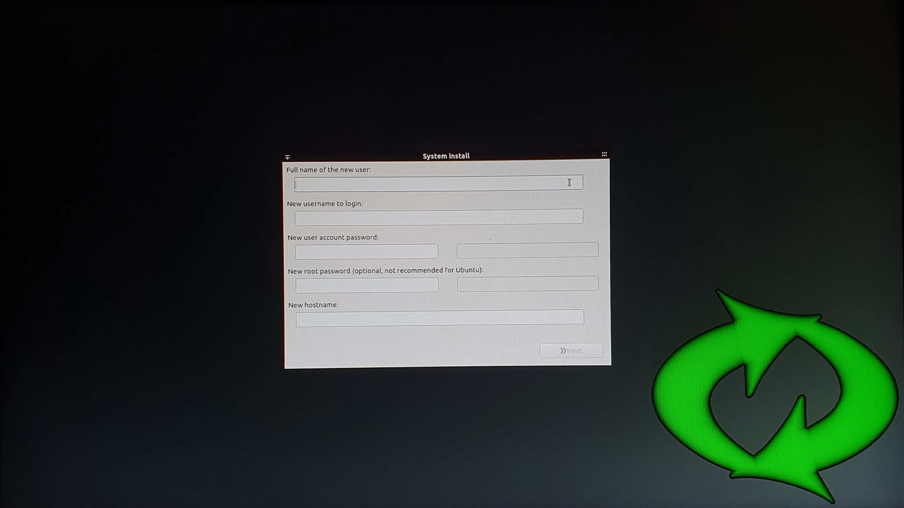5. Set Username, Password, and other necessary credentials. Select Next
6. Now you have to make the partitions on your preferred disk and set their mount points.
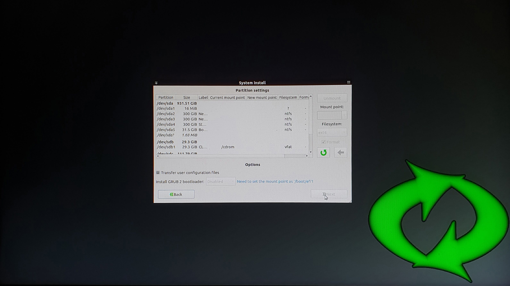7. There are 3 mandatory partitions you need to create. EFI, Swap, and Root partition. Another partition Home is recommended.
- For EFI 100MB is enough.
- For SWAP, set equal to or higher than your RAM.
- For Root, 20GB of minimum storage (or the rest of the storage if HOME partition is not added).
8. Now each partition needs to get a mount point. Click on the 100MB partition and from the Mount Point menu, select /boot/efi. Do the same for other partitions.
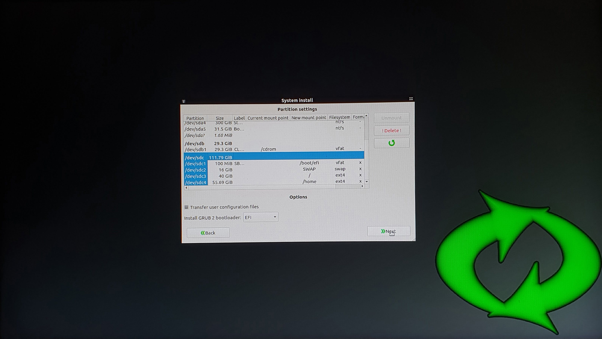9. Finally, click next and wait for the installation process to finish.
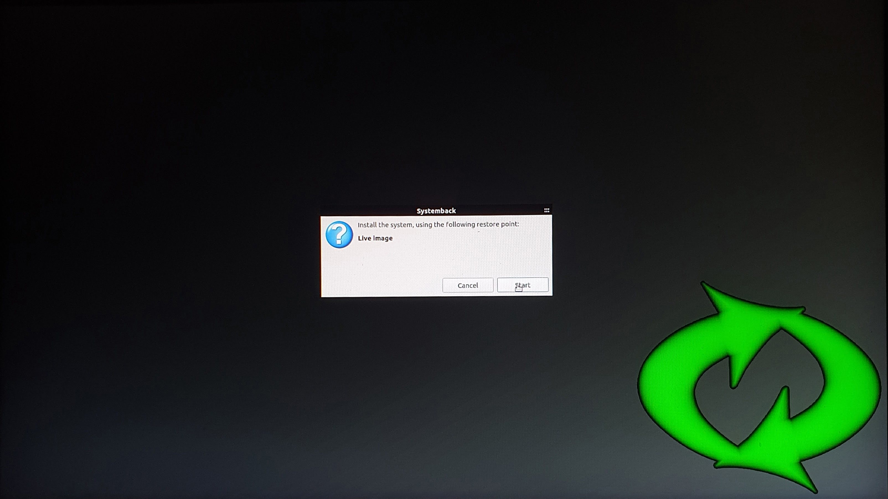 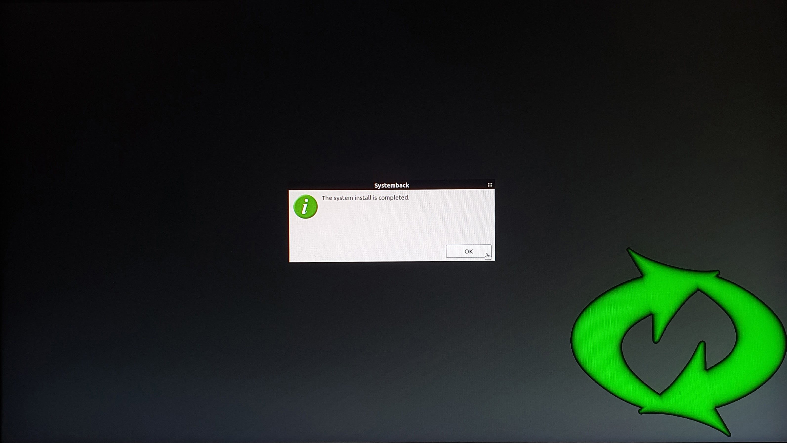
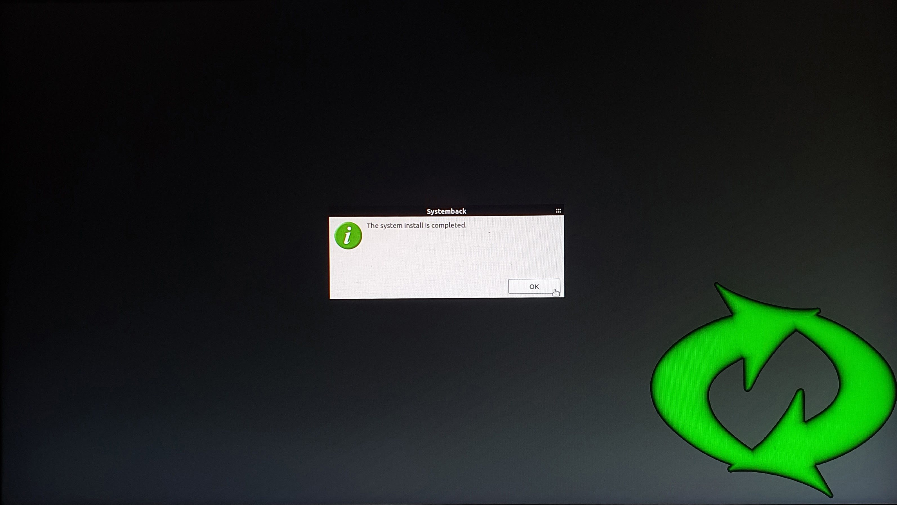
1. Now the pc will reboot. If you installed ClimBuntu Os on Dual Boot mood, you must set boot priorities from the BIOS menu before startup. Follow the images.

 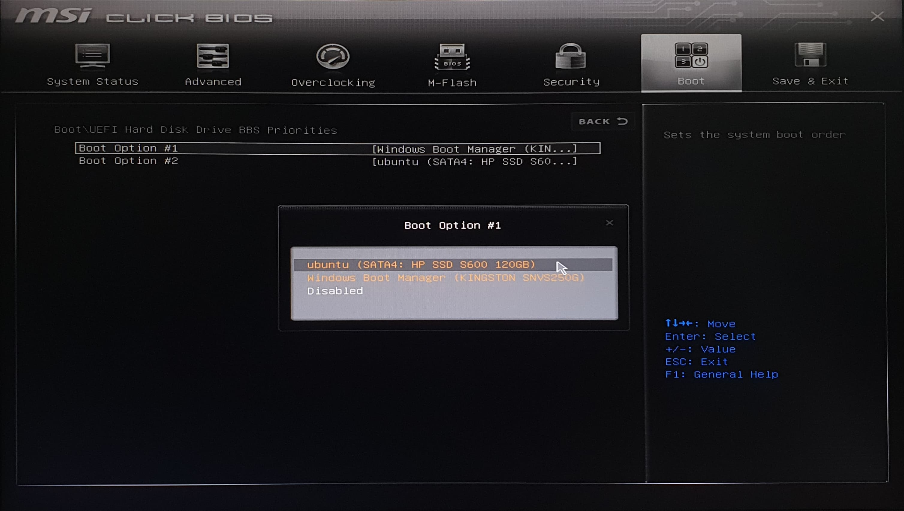
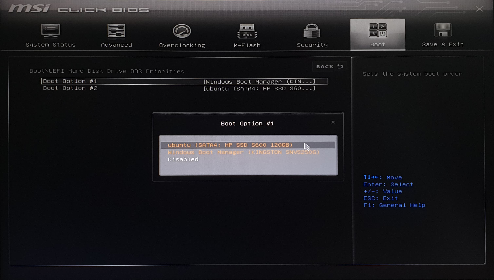


 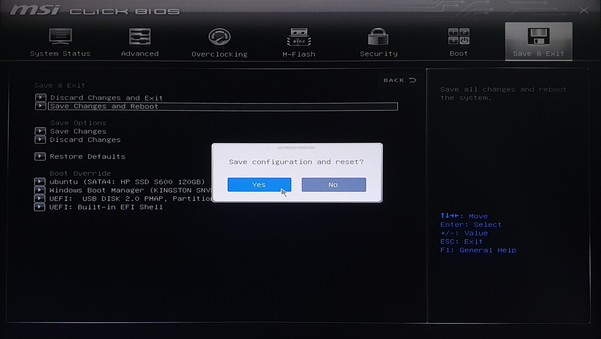
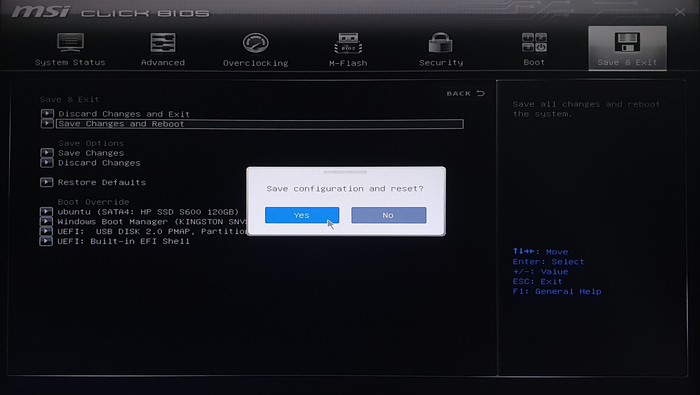
1. After finishing Reboot, you will enter in GRUB menu where the installed OS are listed.
2. If no key is pressed, it will automatically Boot into Ubuntu after 10 seconds. Or you can select manually Up/Down key and then press Enter.
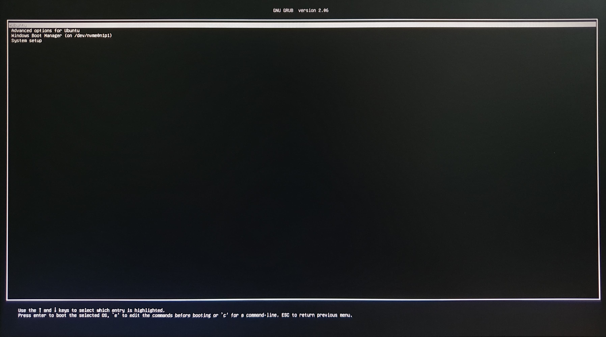
3. In the terminal, type 'cd $MODEL' and 'ls' to find the pre-installed softwares.

4. In the FILE Manager, you will also find the softwares as shortcut.
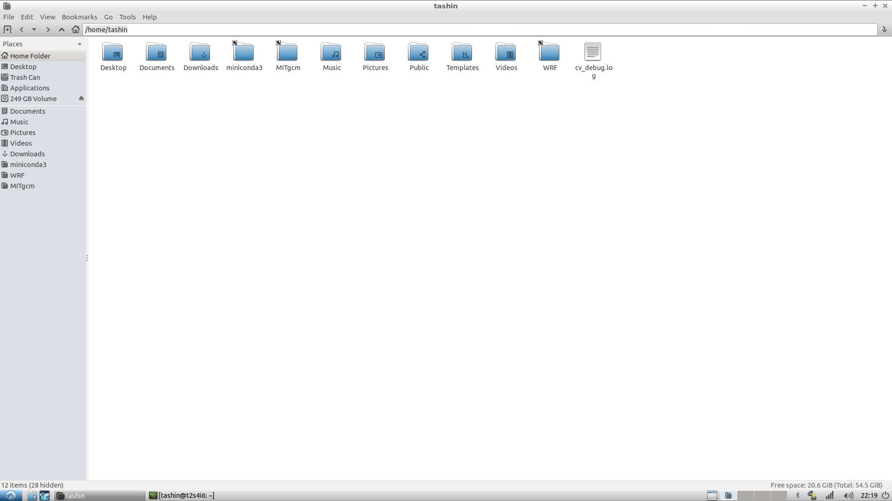5. If you find any error opening the folders from the home directory. Following commands will resolve the issue.
- ln -s $MODEL/WRF WRF
- ln -s $MODEL/miniconda3 miniconda3
- ln -s $MODEL/MITgcm MITgcm